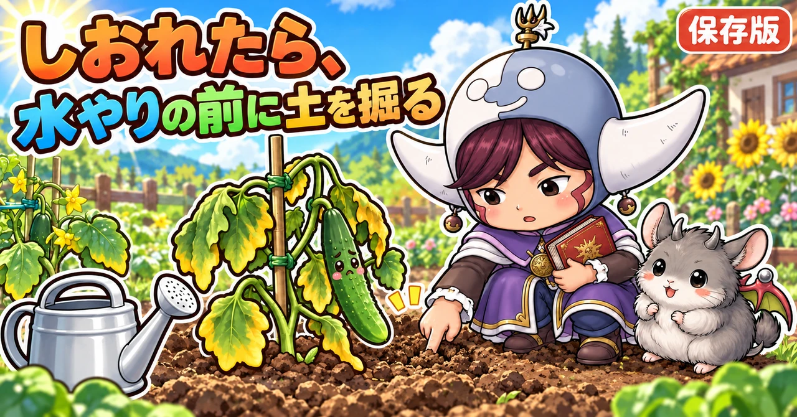

野菜がしおれる・枯れる原因の決定版｜根腐れ、水切れ、根を食べる虫、病気の見分け方と、根を守る水やり

📖 この記事の目次
この記事で分かること
- 野菜がしおれる原因は、大きく分けて6つあります。水切れ、根腐れ、根を食べる虫、茎を切る虫、土から入る病気、植え傷みや肥料やけです。
- 見分ける手がかりは、「夕方や朝に元に戻るか」「土の中まで乾いているか、湿っているか」「根の色とにおい」「茎の根元の様子」の4つです。
- 根腐れは、土がいつも湿っていて、根が息をできなくなり、腐ってしまう状態です。水のやりすぎと、水はけの悪さが主な原因です。
- 根腐れは、気づいたときには土の中でかなり進んでいることが多く、元に戻すのは難しい失敗です。だからこそ予防が大切です。
- 予防の基本は、土の中を確かめてから水をやる、畝のまわりの土をほぐして水はけと通気をよくする、堆肥で根が張りやすい土を作る、の3つです。
- プランターは、畑よりも根腐れが起きやすい場所です。受け皿に水をためない、毎日決まった時間に水をやらない、が大切です。
昨日まで元気だったきゅうりが、朝見たらぐったりしおれている。水をたっぷりやったのに、次の日もしおれたまま。プランターのミニトマトの下の葉が、黄色や茶色になって落ちていく。こうしたとき、つい「水が足りないのかな」と思って、さらに水をやってしまいがちです。ところが、原因が水のやりすぎによる根腐れだった場合、水をやるほど悪くなってしまいます。
この記事では、野菜がしおれる・枯れる原因を見分ける手順から、根腐れのしくみと見分け方、予防の水やりと土づくり、プランターでの注意、野菜ごとの気をつけどころまで、順番に書いていきます。
早見：しおれる原因と見分け方
1. 水切れ
- しおれ方：昼の暑い時間にしおれ、夕方や朝には元に戻る
- 土：指で5cmほど掘っても、中まで乾いてぱらぱら
- 根：白く、においはない
- やること：朝か夕方の涼しい時間に、たっぷり水をやる
2. 根腐れ
- しおれ方：朝になっても戻らない。下の葉から黄色や茶色になる
- 土：いつも湿っている。水がなかなかしみこまない。表面にかびが生えていることも
- 根：茶色や黒っぽく、さわるとぶよぶよ、すぐ切れる。いやなにおいがすることも
- やること：水やりをやめ、土を乾かす。畝のまわりの土をほぐす
3. 根を食べる虫
- しおれ方：だんだん元気がなくなり、昼にしおれる日が増える
- 土：株元を掘ると、白い幼虫などが出てくる
- 根：食べられて少なくなっている
- やること：株元の土を掘って、虫を取り除く
4. 茎を切る虫
- しおれ方：苗が、ある日いきなり倒れる
- 茎：地面のきわで、かじられたように切れている
- やること：株元の土を浅く掘り、近くにひそんでいる虫を探して取る
5. 土から入る病気
- しおれ方：葉が緑色のまま、急にしおれる。株の片側だけしおれることも
- 茎：切ると、中が茶色くなっていることがある
- やること：抜いて畑の外へ。同じなかまの野菜を同じ場所に続けて植えない
6. 植え傷み、肥料やけ
- しおれ方：植えつけ直後や、肥料をやった直後にしおれる
- 根：植えつけのときに傷んだ、または濃い肥料に当たって傷んだ
- やること：植え傷みなら日よけをして水を控えめに。肥料やけなら、たっぷり水をやって肥料を薄める（土が乾いているとき）

しおれる前に気づくしるし
株がぐったりしおれるより前に、小さな変化が出ていることがよくあります。見回りのときに、次の点に気をつけておくと、早めに手を打てます。
- 葉のつやがなく、なんとなく色がくすんでいる
- 新しい葉や、つるの先の伸びが止まっている
- 下の葉が、少しずつ黄色くなってきている
- 水やりのあと、いつまでも土が乾かない
- 雨のあと、株のまわりに水たまりが残る
- 株元を指で押すと、ぐらぐらする
こうしたしるしに気づいたら、しおれるのを待たずに、土の中の湿り気や、株元の様子を確かめます。
原因を見分ける手順
手順1. しおれる時間を見る
昼の暑い時間にしおれていても、夕方や翌朝に葉がぴんと戻るなら、根はまだ働いています。この場合は、水切れや、暑さで一時的に水を吸うのが追いつかなくなっているだけのことが多いです。反対に、朝の涼しい時間になっても戻らない場合は、根そのものが傷んでいる可能性が高くなります。
手順2. 土の中の湿り気を確かめる
土の表面だけを見ても、中の様子は分かりません。株から少し離れたところを、指や移植ごてで5cmほど掘ってみます。掘った土をにぎって固まるなら、水は十分にあります。にぎってもぱらぱらとくずれるなら、乾いています。
- 中まで乾いている → 水切れの可能性
- 中まで湿っている、水がしみ出す → 水は足りている。根腐れや、ほかの原因を疑う
表面が乾いていても、中は湿っていることがよくあります。表面だけを見て水をやると、水のやりすぎにつながります。
手順3. 茎の根元を見る
- 地面のきわで、茎がかじられたように切れている → 茎を切る虫
- 根元がぶよぶよとやわらかい、変色している → 根腐れや、病気
- 根元がぐらぐらする → 根が食べられているか、腐っている
手順4. 根を見る
枯れてしまった株や、植え替える株は、抜いて根を見てみます。
- 白く、太い根がたくさんある → 根は元気。原因は水切れや暑さかもしれない
- 根が少なく、茶色や黒、さわるとすぐ切れる、ぶよぶよしている → 根腐れ
- 根がかじられたように少なく、近くに白い幼虫がいる → 根を食べる虫
- 根に、こぶのようなふくらみがたくさんある → センチュウ（土の中の小さな虫）や、アブラナ科なら根こぶ病
手順5. 最近の天気と作業を思い出す
- 雨が続いていた、毎日水をやっていた → 根腐れ
- 晴れが続いて、水をやっていなかった → 水切れ
- 植えつけたばかり → 植え傷み
- 最近、肥料をやった → 肥料やけ
- 真夏の昼に水をやった → 熱くなった水で根が傷んだ
根の見かた
元気な根
元気な根は、白っぽく、張りがあります。太い根から細い根がたくさん分かれて伸び、土をしっかりつかんでいます。抜いた株の根を水で軽く洗うと、白い根が全体に広がっているのが分かります。
傷んだ根
傷んだ根は、茶色や灰色、黒っぽい色に変わり、張りがなく、引っぱるとすぐに切れます。ひどいものは、皮だけが残って中が溶けたようになっています。白く太い根がほとんど見当たらない場合は、根の多くが傷んでいます。
生きている株の根を見るには
育てている途中の株を抜くわけにはいきません。その場合は、株から少し離れたところを、移植ごてでそっと掘ってみます。白く新しい根が見えれば、根は働いています。土がじめじめしていて、黒っぽい根がちぎれて出てくるようなら、根腐れを疑います。掘ったあとは、土をそっと戻しておきます。
根は、どこまで広がっているか
根は、だいたい葉が広がっている幅と同じくらいまで、横に伸びています。株元だけでなく、葉の広がりの端あたりの土の様子も見ると、根のまわりの状態がよく分かります。
根腐れを知る
どんな状態か
根腐れは、名前のとおり、根が腐ってしまう状態です。土がいつも水びたしで、根が息をできなくなり、弱って腐ってしまいます。根が腐ると、水も養分も吸えなくなるので、葉が変色し、株全体が弱って、やがて枯れてしまいます。
根も息をしている
植物は、葉で光を受けて栄養を作りますが、根は土の中のすき間にある空気から、酸素を取りこんで生きています。毎日のように水をやって、土のすき間がいつも水で満たされていると、根は水におぼれたような状態になり、酸素が足りなくなります。この状態が続くと、根が窒息して、腐ってしまうのです。
根腐れのしるし
- 水やりのあと、土がなかなか乾かない。水がしみこむのが遅い
- 土の表面に、白っぽいかびが生えている
- 株全体の元気がない
- 下の葉から黄色や茶色に変わり、落ちていく
- 茎が、本来の硬さがなく、さわるとぶよぶよしている
- 根を見ると、茶色や黒っぽく変色している
気づいたときには進んでいる
根腐れは、土の中で静かに進みます。葉や茎にしるしが出たころには、根の多くが傷んでいることが多く、そこから元に戻すのは難しいものです。だからこそ、日ごろの水やりと、水はけのよい土づくりで、起きないようにすることが大切です。
根腐れから病気が入ることも
根が弱って傷むと、そこから、土の中の病原菌が入りやすくなります。根腐れだと思っていたら、病気も重なっていた、ということもあります。
根腐れが起きやすい条件
水のやりすぎ
いちばん多い原因です。特に、家庭菜園を始めたばかりの人は、心配になって毎日水をやってしまいがちです。畑に植えた野菜は、根がしっかり張れば、雨だけでほとんど水やりはいらないことも多いものです。
梅雨の時期
雨が続く梅雨は、土がいつも湿った状態になります。この時期に、さらに水をやると、根腐れが起きやすくなります。
植えつけてすぐの時期
植えつけてすぐの苗は、根がまだ小さく、たくさんの水を吸うことができません。それなのに水をたくさんやると、根のまわりがずっと水びたしになり、根腐れを起こしやすくなります。
水はけの悪い畑
粘土っぽい土や、雨のあと水たまりができる畑は、水がなかなか抜けず、根腐れが起きやすくなります。畝と畝の間（通路）が踏み固められていると、そこから水が抜けにくくなります。
根の浅い野菜
きゅうりなど、浅いところに根を張る野菜は、表面近くの土の水の具合の影響を受けやすく、根腐れに注意が必要です。
プランター
土の量が限られていて、水の逃げ場が少ないので、根腐れが起きやすくなります。

根腐れの予防
1. 土の中を確かめてから水をやる
水をやる前に、株から少し離れたところを指で5cmほど掘って、中の湿り気を確かめます。中が湿っていれば、水やりはいりません。毎日決まった時間に、確かめずに水をやる習慣は、根腐れのもとです。
2. 水をやるときは、たっぷり、間をあけて
水をやるときは、根の深さまで届くように、たっぷり与えます。そのあとは、土の中が乾いてくるまで、次の水やりは待ちます。少しずつ毎日やるより、たっぷりやって間をあけるほうが、根が深く伸び、根腐れも起きにくくなります。
3. 植えつけてから実がつくまでは、水を控えめに
きゅうり、なす、ピーマンなどの夏野菜は、植えつけてから実がつきはじめるまでは、水を控えめにします。水を探して根が深く伸び、のちの暑さにも強い株になります。実がつきはじめて、根がしっかり張ってから、乾くときにたっぷり水をやります。
4. 通路の土をほぐす
雨のあとに、畝と畝の間の土が固まって、水がたまったままになっていることがあります。天気のよい日に、スコップを深くさしこんで、固まった土をほぐしておくと、空気が入り、水も抜けやすくなります。土をひっくり返す必要はなく、スコップを深くさして、少しゆするだけでも効果があります。マルチを張っている畝のきわは、マルチにそってスコップを縦にさしこみます。
5. 堆肥で、根が張りやすい土にする
堆肥を入れて土づくりをすると、土の中に小さな粒のかたまりができ、そのすき間を空気と水が通りやすくなります。水はけがよくなり、根も張りやすくなるので、根腐れが起きにくい土になります。
6. 畝を高くする
水はけの悪い畑では、畝を高めに立てて、根のまわりに水がたまらないようにします。畝のまわりに、水の流れる溝を作っておくのも効果があります。
水はけを調べる
雨のあとを見る
雨が降ったあと、畑を見回ります。畝のまわりや通路に、水たまりがいつまでも残っている場所は、水はけが悪いところです。どこに水がたまりやすいかを覚えておくと、そこには湿気に弱い野菜を植えない、畝を高くする、といった工夫ができます。
穴を掘って水を入れてみる
スコップで深さ30cmほどの穴を掘り、水を入れて、水が抜けていく速さを見ます。翌日になっても穴に水が残っているようなら、水はけはかなり悪いと考えます。土を掘ったときに、途中から急に硬い層が出てくる場合は、その硬い層が水の通り道をふさいでいることがあります。
水はけのよい土の作り方
堆肥を入れる
いちばんの基本は、堆肥を入れることです。堆肥を入れると、土の中に小さな粒のかたまりができ、そのすき間を水と空気が通るようになります。1回で劇的に変わるものではないので、作付けのたびに少しずつ入れて、何年かかけて土を育てます。
硬い層をくずす
畑の深いところに、水を通しにくい硬い層があると、上の土をいくら耕しても、水はそこで止まってしまいます。スコップで深く掘って、硬い層をくずし、そこへ堆肥を混ぜこんでおくと、硬い層がやわらかくなり、水が抜けやすくなります。畑全体を深く掘るのは大変なので、何か所かにスポット的に穴を掘って、堆肥を埋めていく方法もあります。
もみ殻や腐葉土を混ぜる
粘土っぽい畑には、もみ殻や腐葉土を混ぜるのも効果があります。もみ殻は分解が遅く、長いあいだ土にすき間を作ってくれます。ただし、入れすぎると乾きすぎるので、少しずつ入れます。
畝を高くし、溝を作る
すぐに土が変わらない畑では、畝を高めに立てて、根のまわりが水につかりにくくします。畝のまわりに、水の流れる溝を作り、畑の外へ水が抜けるようにしておきます。
通路を踏み固めない
雨のあとのぬれた土の上を歩くと、通路が踏み固められて、水が抜けにくくなります。雨のあとすぐは、なるべく畑に入らないようにし、入るときは板を渡すなどして、土を踏み固めないようにします。
根腐れが起きてしまったら
1. 水やりをやめる
まず水やりをやめて、土を乾かします。
2. 通路の土をほぐして、空気を入れる
畝のまわりの固まった土をほぐし、水が抜けやすいようにします。
3. 弱った株は、植え替えも考える
根腐れが進んだ株は、元に戻るのが難しいので、時期が間に合うなら、新しい苗に植え替えるか、別の野菜に切り替えることも考えます。
4. 抜いた株の根を見て、原因を振り返る
抜いた株の根を見て、どこまで傷んでいたかを確かめます。水やりのしかたや、畑の水はけを見直すきっかけにします。次の作付けに生かせます。
植えつけるときの水やり
植え穴に先に水を入れる
苗を植える前に、植え穴に水をたっぷり入れて、水が引くのを待ってから植えます。こうすると、根のまわりの土が湿って、苗の根が早くなじみます。
苗は、そっとポットから抜く
苗の茎を引っぱってポットから抜くと、根が切れたり、茎が傷んだりします。ポットを逆さにして、手で株元をそっと支えながら抜きます。根鉢はくずさずに、そのまま植えます。
植えたあとに、水をやる
植えたら、まわりの土を寄せて、すき間をしっかり埋め、水をやって土となじませます。
その後は、土の中を確かめてから
植えつけたあと、心配になって毎日水をやるのは、根腐れのもとです。植えつけ直後の水やりのあとは、土の中を確かめて、乾いているときだけ水をやります。根が張るまでの数日間、強い日ざしでしおれる場合は、水を足すより、日よけをするほうが効果的なことがあります。
水切れのときの水やり
朝か夕方に
水切れでしおれていたら、朝か夕方の涼しい時間に、たっぷり水をやります。
真夏の昼は避ける
真夏の晴れた日の昼は、マルチの上や株元の地面がとても熱くなっています。そこへじょうろで水をかけると、はじめに出た水が熱いお湯のようになって根に届き、根を傷めてしまうことがあります。真夏の昼に上から水をやるのは避けます。どうしても必要なときは、葉の上からではなく、株元に静かに与えます。
畝の間に水をやる
夏の暑い時期は、株元だけでなく、畝と畝の間にたっぷり水をやると、地面の温度が下がり、根のまわりの土にも水がしみていきます。
そのほかの原因と対処
根を食べる虫
コガネムシの幼虫や、ウリハムシの幼虫は、土の中で根を食べます。株がだんだん元気をなくし、昼にしおれる日が増えたら、株元の土を少し掘って、白い幼虫がいないかを見ます。見つけたら取り除きます。
コガネムシの幼虫は、特にプランターや、堆肥をたくさん入れた畑で多く見られます。夏から秋にかけて、土の中で育ちながら根を食べるので、秋に株の元気がなくなったら疑います。株元を指で押すとぐらぐらするのも、根が食べられているしるしです。
茎を切る虫
ネキリムシやヨトウムシの幼虫は、夜に出てきて、苗の茎を地面のきわでかじり切ります。苗が朝いきなり倒れていたら、株元の土を浅く掘ってみると、近くに丸まった幼虫がひそんでいることがあります。
土から入る病気
土の中の菌が根から入り、茎の中の水の通り道をふさいでしまう病気があります。葉が緑色のまま急にしおれる、株の片側だけしおれる、といったしるしが出ます。茎を切ると、中が茶色く変色していることもあります。こうした病気は治らないので、株を抜いて畑の外へ出し、同じなかまの野菜を同じ場所に続けて植えないようにします。
土から入る病気は、いちど畑に入ると、何年も土の中に残ることがあります。予防には、同じなかまの野菜を同じ場所に続けて植えないこと、病気に強い接ぎ木苗を使うこと、夏の暑い時期に土に透明なフィルムをかけて太陽の熱で土を温める（太陽熱消毒）こと、などがあります。水はけをよくして、根を傷めないことも、病気の入り口をふさぐことにつながります。
植え傷み
植えつけのときに根を傷めると、しばらく水をうまく吸えず、しおれることがあります。植えつけは、根鉢をくずさないように、ポットからそっと抜いて植えます。植えたあとは水をやって土となじませ、強い日ざしの日は日よけをして、根がつくのを待ちます。
肥料やけ
濃い肥料が根に直接ふれると、根が傷んでしおれることがあります。肥料は株元から少し離してまき、量を守ります。肥料をやりすぎたと思ったら、土が乾いているときに、たっぷり水をやって薄めます。ただし、土が湿っているときにさらに水をやると根腐れにつながるので、土の様子を見て判断します。
プランターでの注意
毎日の水やりが、いちばんの原因
プランターで野菜が枯れる原因として多いのが、根腐れです。毎日のように水をやると、根がいつも水につかったような状態になります。土の表面が乾いてから、鉢の底から流れ出るくらいたっぷり与え、次は表面が乾くまで待ちます。
受け皿に水をためない
受け皿に水がたまったままだと、プランターの底の土がいつも水びたしになり、根腐れの原因になります。水やりのあと、受け皿にたまった水は捨てます。
水はけのよいプランターを選ぶ
底に水抜きの穴がしっかりあり、すのこなどで底の水がたまりにくいものを選びます。側面にすき間の入ったスリット型のプランターは、通気がよく、根腐れの予防になります。貯水タンクつきのプランターは、水やりの回数を減らせて便利ですが、水が常にたまった状態にならないよう、表示どおりに使います。
水やりのタイミングの見分け方
プランターは、土の量が少ないぶん、乾きかたの変化が分かりやすい入れ物です。土の表面の色が白っぽく変わってきた、指を第一関節までさしこんでも湿り気を感じない、プランターを持ち上げると軽くなっている、といったしるしがそろったら、水やりのタイミングです。持ち上げたときの重さは、水やり直後の重さと比べると、すぐに分かるようになります。
夏と冬で変える
夏は乾きが早いので、朝に水をやっても夕方には乾いていることがあります。冬は、何日も湿ったままのことがあります。季節で回数を決めず、毎回、土の様子を見てから判断します。
置き場所
雨が当たり続ける場所では、土が乾く暇がありません。長雨のときは、軒下に移すなどして、雨に当たりすぎないようにします。

野菜ごとの注意
きゅうり
根が浅く広く張るので、根腐れにも水切れにも注意がいります。植えつけてから実がつくまでは水を控えめにし、梅雨は株元への水やりを控えます。実がつきはじめて暑くなったら、乾くときにたっぷり水をやります。
すいか、かぼちゃ
水を好むと思われがちですが、湿気が多すぎるのは苦手です。梅雨の時期に根腐れを起こすことがあります。枯れた葉を取って風通しをよくし、泥はねを防ぎます。
なす、ピーマン、トマト
植えつけてから実がつくまでは、水を控えめにします。トマトは特に、水をやりすぎると実の味が落ち、根も弱りやすくなります。
里芋、しょうが
湿り気を好む野菜です。乾燥が続くときは、水をやってかまいません。ただし、水がたまって抜けない状態はよくありません。
ミニトマトのプランター
ベランダのプランターで育てるミニトマトは、根腐れも水切れも起きやすい組み合わせです。土の表面が乾いてから、たっぷり与えます。
えだまめ
植えつけ直後に、心配で水をやりすぎて根腐れを起こすことがあります。植えた直後の水やりのあとは、土の中を確かめてから与えます。
スナップエンドウ、そら豆
湿気に弱く、水はけの悪い畑では根を傷めやすい野菜です。高めの畝に植えます。
大根、かぶ、にんじん
根を食べる野菜は、水はけの悪い土だと、根が割れたり、形が悪くなったり、腐ったりしやすくなります。土をよく耕して、畝を高めにします。育ちの後半は、水やりを控えめにします。
玉ねぎ、にんにく
冬のあいだは土が乾きにくいので、水やりはほとんどいりません。水はけの悪い畑では、高めの畝に植えます。
季節ごとにやること（一般的な地域の目安）
- 4〜5月：夏野菜の植えつけ。植えた直後の水やりのあとは、土の中を確かめてから
- 6〜7月：梅雨。水やりは控えめに。雨のあとの晴れた日に、通路の土をほぐす
- 7〜8月：実がつきはじめたら、乾くときにたっぷり。真夏の昼の水やりは避ける
- 9〜11月：秋野菜の植えつけ。台風や長雨のあとは、畝のまわりの水はけを確かめる
- 冬：土が乾きにくいので、水やりはほとんどいらない。プランターは特に控えめに
説明が分かれるところ
酢を薄めた水は、根腐れの予防になるか
酢を水で大きく薄めて株元に与えると、根が元気に伸びる、という方法を紹介する人もいます。一方で、土が湿りすぎているときに与えると、かえって逆効果になる、という注意もあります。はっきりした効き目が確かめられているわけではないので、試すなら、土が乾き気味のときに、ごく薄めにして使います。根腐れの予防は、水やりと水はけを整えることが基本です。
畑の野菜に、水やりはいるか
畑に植えた野菜は、根が深く張れば、雨だけでほとんど水やりはいらない、という考え方があります。一方で、晴れが続いて土の中まで乾いたときや、実がつく時期の夏野菜には、水やりが必要だ、という考え方もあります。どちらの場合も、決め手は「土の中が乾いているかどうか」です。確かめてから判断すれば、どちらの考え方でも失敗は少なくなります。
しおれた株に、液肥を与えると元気になるか
肥料が足りないせいで元気がないのなら、液肥は早く効きます。けれども、根腐れや根を食べる虫で根が傷んでいる場合は、肥料を吸う力そのものが落ちているので、液肥を与えても効きません。それどころか、弱った根に肥料が当たって、さらに傷めることもあります。しおれた株には、まず原因を確かめてから、肥料を考えます。
よくある失敗
しおれていたので、毎日水をやった
原因が根腐れなら、水をやるほど悪くなります。土の中を確かめてから判断します。
表面が乾いていたので、水をやった
表面が乾いていても、中は湿っていることがよくあります。5cmほど掘って確かめます。
受け皿に水をためたままにしていた
プランターの底がいつも水びたしになり、根腐れの原因になります。水やりのあとは捨てます。
真夏の昼に、上から水をかけた
熱くなった水が根を傷めます。朝か夕方にします。
通路を踏み固めたままにしていた
雨のあと水が抜けず、畝の中まで湿気がこもります。晴れた日に、スコップでほぐします。
植えつけ直後に、心配で毎日水をやった
根がまだ小さいうちに水をやりすぎると、根のまわりが水びたしになり、根腐れを起こしやすくなります。植えたときの水やりのあとは、土の中を確かめてから与えます。
自家製の堆肥を、そのまま入れた
コガネムシの幼虫などがまぎれこんでいると、根を食べられてしおれます。ふるいにかけて、虫やごみを取り除いてから使います。
よくある質問
根腐れを起こした株は、元に戻りますか
軽ければ、水やりをやめて土を乾かすと、新しい根が出て持ち直すことがあります。根の多くが傷んでいる場合は、元に戻るのは難しいので、植え替えを考えます。
土の表面に白いかびが生えています
土がいつも湿っているしるしです。水やりを控え、風通しをよくします。
水やりの回数の目安はありますか
回数で決めず、土の中の湿り気で決めます。同じ野菜でも、天気や季節、土の種類で、必要な水の量は変わります。
マルチをしている畑でも、水やりはいりますか
マルチの下は、土の水分が逃げにくく、一定の湿り気が保たれています。そのため、マルチをしている畑では、ほとんど水やりはいらないことが多いです。水やりの前には、マルチのすそを少しめくって、土の中を確かめます。
プランターの底に、鉢底石は必要ですか
鉢底石を敷くと、プランターの底の水はけがよくなり、根腐れの予防になります。底がすのこ状になっていて水がたまりにくいプランターなら、なくても育てられます。いずれにしても、受け皿に水をためないことのほうが大切です。
雨の日のあとも、水やりはいりますか
ほとんどの場合いりません。雨のあと数日は、土の中に水が残っています。
旅行などで留守にするとき、水やりはどうすればいいですか
畑の野菜は、出かける前に土の中を確かめ、乾いていればたっぷり水をやっておきます。プランターは、日の当たりにくい涼しい場所へ移し、出かける前にたっぷり与えます。受け皿に水をためておくと、留守のあいだに根腐れを起こすことがあるので、ためておくのは短い期間だけにします。
冬の水やりはどうすればいいですか
冬は、土が乾きにくく、野菜が吸う水も少なくなるので、畑ではほとんど水やりはいりません。プランターは、土の表面が乾いてから、暖かい日の午前中に与えます。
堆肥をたくさん入れれば、水はけはよくなりますか
よく分解の進んだ堆肥なら、土のすき間が増えて、水はけはよくなります。ただし、分解の途中の堆肥をたくさん入れると、土の中で分解が進むときに、根を傷めることがあります。また、自分で作った堆肥には、コガネムシの幼虫など、根を食べる虫がひそんでいることがあるので、ふるいにかけて、虫や大きなごみを取り除いてから使います。
しおれた葉は、水をやれば元に戻りますか
水切れでしおれた葉なら、水をやると数時間で戻ります。根腐れや病気でしおれた葉は、水をやっても戻りません。水をやって戻るかどうかも、原因を見分ける手がかりになります。
学ぶ：根のしくみ🔬
根は、どこで水を吸っているのか
根が水や養分を吸うのは、主に根の先のほうの、細くやわらかい部分です。ここには根毛という、とても細い毛のようなものがたくさん生えていて、土と触れる面積を広げています。根腐れでいちばん先に傷むのも、このやわらかい根の先です。
なぜ、水を控えると根が深く伸びるのか
土の表面に、いつも水がたっぷりあると、根は浅いところにとどまり、深く伸びる必要がありません。表面が乾いてくると、根は水を求めて、深いところへ伸びていきます。深く張った根は、夏の暑さや乾燥にも強く、根腐れもしにくくなります。
なぜ、昼にしおれて夕方に戻るのか
植物は、葉の裏にある小さな穴から、たえず水を水蒸気として外に出しています。暑い昼間は、出ていく水の量がとても多くなり、根から水を吸う速さが追いつかなくなることがあります。すると、葉の中の水が足りなくなって、一時的にしおれます。夕方になって気温が下がると、出ていく水が減り、根から吸う水が追いついて、葉は元に戻ります。根が元気なら、このくり返しは珍しくありません。朝になっても戻らないのは、根そのものが水を吸えなくなっているしるしです。
なぜ、水びたしの土で根が腐るのか
根は、土のすき間の空気から酸素を取りこんで、生きるためのエネルギーを作っています。土が水びたしになると、すき間の空気が水に追い出され、根は酸素を取りこめなくなります。弱った根は、自分の体を守る力が落ち、さらに、酸素の少ない土の中で増えやすい菌に傷められて、腐っていきます。水のやりすぎで根が腐るのは、水そのものが悪いのではなく、空気がなくなることが原因なのです。
なぜ、土のすき間が大切なのか
よい土には、大小さまざまなすき間があります。大きなすき間は、水が抜け、空気が入る通り道になります。小さなすき間は、水をためておく場所になります。この両方があることで、根は水も空気も取りこめます。堆肥を入れて土づくりをすると、このすき間がほどよくできるので、水はけと水持ちの両方がよくなるのです。
まとめ
ここまで読んでくださって、ありがとうございます！
野菜がしおれる・枯れる原因と、根腐れの防ぎ方のポイントを、もう一度まとめておきます。
- しおれる原因は、水切れ、根腐れ、根を食べる虫、茎を切る虫、土から入る病気、植え傷みや肥料やけ
- 夕方や朝に戻るなら水切れ、戻らないなら根の傷みを疑う
- 水をやる前に、5cmほど掘って土の中を確かめる
- 水やりは、たっぷり、間をあけて。植えてから実がつくまでは控えめに
- 雨のあとは通路の土をほぐし、堆肥で水はけのよい土を作る
- プランターは、受け皿に水をためない。毎日決まった時間に水をやらない
- 真夏の昼に、上から水をかけない
- 水はけの悪い畑は、堆肥を入れ、硬い層をくずし、畝を高くする。雨のあとの通路は踏み固めない
- 植えつけは、植え穴に先に水を入れてから。植えたあとは、土の中を確かめてから水をやる
しおれた株を見つけたら、水をやる前に、まず指で土を5cmほど掘ってみてください。その一手間で、根腐れの失敗はぐっと減らせます💧
移植ごて
水をやる前に、株から少し離れたところを5cmほど掘って、土の中の湿り気を確かめます。根の様子を見るときにも。


鉢底石
プランターの底に敷いて、水はけをよくします。受け皿に水をためないことと合わせて。

腐葉土
土に混ぜて、水はけと水持ちのよい、根が張りやすい土を作ります。

あわせて読みたい


次に読む
記事一覧へ